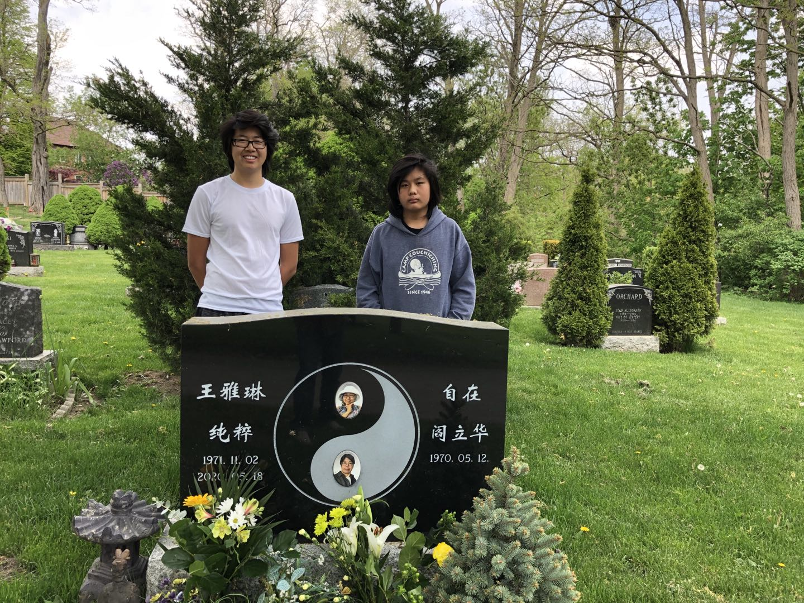
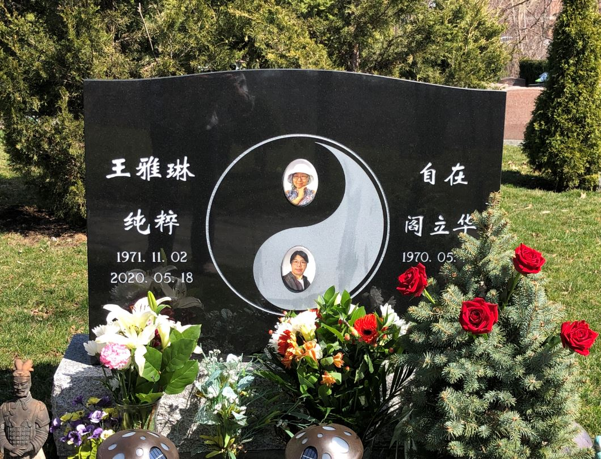

周年祭 2021.05.18

昨夜梦新掩门立
蓝花碎点妆白衣
身形清减女儿影
娇俏辉映青春忆
醒来懵懂心暗喜
仙乡灵通胜往昔
苦痛不再伴身随
轻笑已去旧时疾
忽又悲从心底起
两样世界无可寄
牵手时光帧帧回
泪沾枕巾难忍泣
又是一年春光里
天清花明携子祭
相约不负离时言
心同顺命共行健
......
清明祭 2021.04.04

青草萋萋掩香魂
梦回常忆笑靥纯
但愿他乡花常开
拈红拾翠无尽春
结婚22周年祭 2021.02.01
白雪茫茫土如铁
枯枝颤抖风中立
碑冷心空天无声
笑靥花容冻永寂
二十二载终分离
昔日艳阳成追忆
梦断难画旧时乐
此恨无尽声声泣
今天，你49岁 2020.11.02
清晨，有风，玉兰树的枝头摇曳，是你喜欢的树，是你喜欢的秋天。那一年，你对我说：黄叶舞秋风。
我的眼泪止不住的流下来。
在这样的日子里，我们曾经手握着手：即使这个世界没有了，你还有我；即使这个世界消失了，我还有你。
168天了，你没有走。我的身体里植下了你，你的倔强，你的善良，你的任性。
你不是我的另一半，分不开的。我俩长在一起，渗入，交错，我不是我，我是你和我。
泪水濛濛，难以下笔。
百日祭 2020.08.23
百日正好是七夕。牛郎织女尚有鹊桥会，我们下回相遇在哪里？
以前的周末下午，你午睡，我出门喝咖啡。傍晚时分，我们约在trail上相遇。如今，我还是走trail，树还是那个树，水还是那个水，可是对面过来的人里，再也没有你。
当年牵手时，我们默默的相望，默默的许愿，虽然没有说出口，但眼神里我们都有确信：生生死死在一起。你走了，留下的我又算什么。
我们互为相依，筑起了生命的信念，如此丰盈。生活给了我们那么多，又一次性的全部捣毁。真的有天道吗？即使有，也是操蛋的天道。
在这些以泪洗面的日子里，你的点点滴滴越来越多的涌现，将我淹没。
幸好孩子们在，他们让我能继续活下去。孩子们跟我说话，我都要想一想：你是怎么回答的。孩子们遇到事，我也要想一想：你会怎么帮他们。
你的遗愿，我会实现：把孩子养大养好。
以后的日子里，有你的祝愿，我能走下去的。
你在另一个世界，还好吗？
七七祭 2020.07.04
明天是七七四十九天，你在哪里投胎？最后的日子里，你曾经说：去台湾看一看。那是你的暗示？
凌晨时分，我做了一个梦，清晰得很：一个转轮，或者是转着的球，或者维度更高，我换了很多角度，每个角度都只看到平面的圆，色彩厚重混沌变幻，似乎要越过边界。我看到色彩后面有一个女人，动作很大。
轮回后，该有降生。如果明天出生，你还记得前世吗？不记得也好，新的生命没有包袱。我会去找你；找到了，我只远远的看看你。
我们幸福的日子在1999年2月1日。那天我们领了结婚证。久久二归一，我们的祈愿。那时，京郊的路上车还不多，阳光灿烂，驱散了初春的寒气。我们牵着手，我有对未来的惶惑，你的眼里只有如水的柔情，手坚定的握着我。
那时候的每一天对我俩都是那么新鲜，彼此发现，一起推开一扇一扇的门，都是没有到过的地方。
你开始做饭了，从手生到熟练，你学得很快。卧房不大，大床几乎占了一半的空间。周末阳光散在窗帘上，暖暖的。我们在床上厮缠，隔绝了外世，我俩在一起，已经是一个大世界。你起床了，在厨房里试手。我还躺着，偶尔听到碗盆琳琅清脆的碰撞。如果时光停滞，冻结在那一刻，我也情愿，哪怕生命就此终结......
你走后的日子里，孩子们好像一下子长大了。他们甚至给我做饭。放心吧，我会好好的看护他们。
不要牵挂，在新的轮回里，你的生命幸福更多，痛苦更少。
我们都把最好的自己献给彼此 2020.06.27
40天了，你的魂在哪里？我梦到你了，你我相拥，你的笑容能化解所有忧愁。
为什么是你？为什么不是我？
你那么热情，那么纯粹，该是上天眷顾的人。你曾说：等我老了，让我坐在轮椅上，你推着我走….. 你的许诺呢？
那一天，病房里只有你和我，你的手尚有余温，可再也不能握着我了。没有了时间，无尽的悲凉。
我们认真生活，每一步都走得那么仔细，却迎来了这个结局。
你说认识我是你的幸运。携子之手时，死生契阔，为什么我们要提那个“死”字？
假使你不认识我，
假使你不嫁给我，
假使我们不移民，
假使你离开我，
你的生活轨迹完全不同，结局就能改写。
都错了，所有的都错了。为什么上天给你，给我，这样的惩罚？我们怎么做，才能对？
你走后，世界是另一幅模样，空气中有沉甸甸的看不见的迷雾。都说忧愁如流水，时间能帮着洗刷。我又错了。悲伤是心底的坚冰，时不时融化，侵蚀五脏六腑。转移注意力后，水又结成冰，等着下一次。那融化的水越来越多。
确诊是20个月前，诊疗报告说：很有可能incurable（不可治愈）。我被打懵了。你遇大事有静气，稳得住。
我们不放弃，积极治疗，改善食谱，起居有度。我们改风水，我们祈祷，我们祈福。化疗，手术，检查，再化疗，再手术。一次又一次的努力。可我们每次去见医生时，只有越来越坏的消息。
我们卷进了一个漩涡，不管怎么挣扎，漩涡缓慢而坚定地把我们带向深渊。心如灰烬。
最后的日子里，你疼得震颤，我看得心碎。人来世间，为什么要遭这种罪。
我们曾经那么幸福，在身体心智最好的日子，我们相遇，我们恋爱，我们结婚，我们生子。生命中愉悦的时光，一大半有你的身影。
那时的你好美。记得夜色中你闪亮的眼光，记得草地上你纯洁的柔情， 记得相拥时你身体的颤抖。
20多年的婚姻多少欢笑，也有些艰难的日子，可当我们越来越好时，魔鬼一般的病缠上了你。
你走了，或许是解脱。你在夜里的星辰间，在夕阳的云朵后，在花儿的露水里。
坐在你常坐的沙发上，我还能感受到你。
走在你常走的小路上，我还能感知到你。
只要我记着你，你就还活着。
你的笑容化解一切忧愁 2020.06.27
作者：大侠
你的笑容可以化解一切忧愁，笑起来时嘴角的小虎牙就爽朗地钻出来，招呼那些小烦恼们说，
嘿嘿，我可知道你们的小把戏，快快走开喔。你优雅的步伐总是那样从容而轻盈，好像身体里装了青春的琴弦，
律动得那样美好。你的纤纤玉手总是把各种事物拿捏的那么得当，难怪雕塑家都要用你的手做黄河母亲的原型。
你给我们唱豫剧，谁说女子不如男，不是小香玉那种豪爽霸气，却十分饱满雅致，娓娓而来令人回味。
你总是能讲很多中学时住校的有趣故事，感觉你身上藏了一本厚厚的故事手册，所以你眼神里泛出的调皮，
会让一切变得像故事书一样轻松有趣。你是世界没有烦恼，你会佑护立华和孩子们活得依旧美好。
又看到你的眼睛眨呀眨，星空是你新的家。我们一直都记着你，亲爱的雅琳，你是那样鲜活，永远永远!